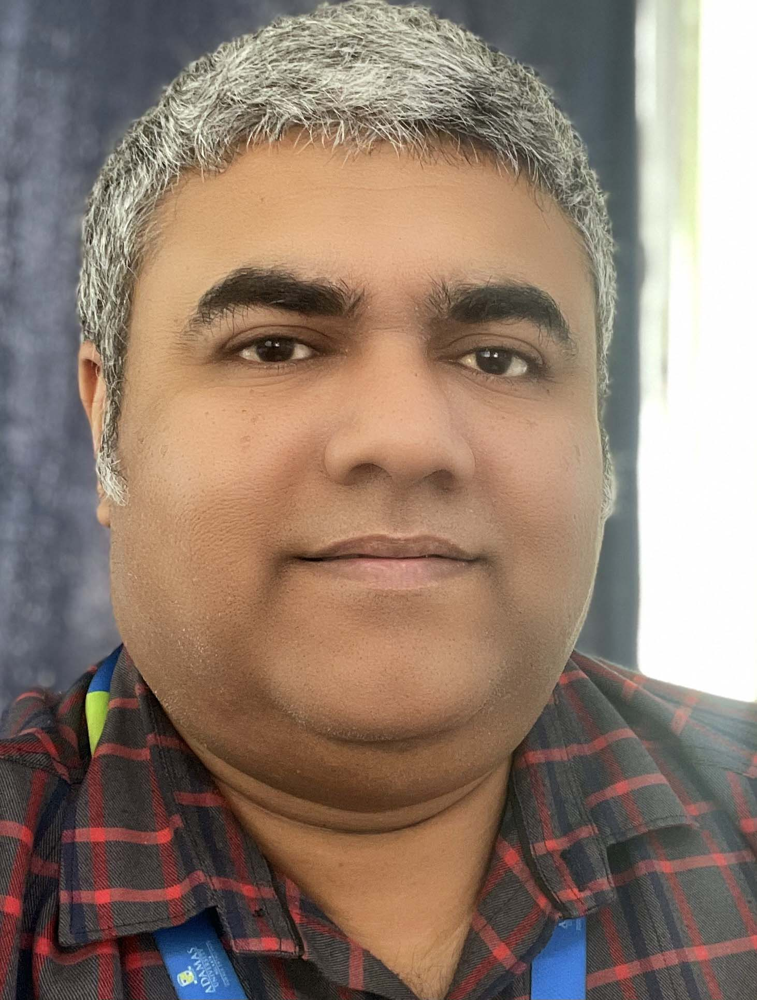

Dr. Tamal Ghosh
Associate Professor at the Department of Computer Science & Engineering
Email: tamal.ghosh1@adamasuniversity.ac.in
Room No. 6205, 2nd Floor, School of Engineering and Technology, Adamas University

Email: tamal.ghosh1@adamasuniversity.ac.in
Room No. 6205, 2nd Floor, School of Engineering and Technology, Adamas University
I am an Associate Professor of Computer Science and Engineering at the Adamas University Kolkata. Prior to joining AU, I was a Research Associate from 2020-2023 and a postdoctoral researcher from 2018-2020 at the Department of Manufacturing and Civil Engineering, Norwegian University of Science and Technology. I pursued the prestigious INSPIRE-DST Research Fellowship and obtained my PhD from Jadavpur University in 2017. I also obtained a Masters' in Industrial Engineering & Management and Bachelor in Computer Science and Engineering from National Institute of Technology Calicut.
My research is focused on the no mans land of Theoretical Artificial Intelligence and Industrial Automation. I have developed several methodologies, algorithm based on nature-inspired computing and created industrial use-cases. I am specifically focused on multi-criteria optimization, Collaborative machine learning, industry 4.0, digital twin researches.
Currently I am interested in industrial collaborative research-project-consultancies, where academic knowledge can be extended/transferred to improve the product development process in the industry.
Insert teaching content here...
Insert teaching content here...
Insert research content here...
Insert publications content here...
Insert projects content here...
Insert more content here...